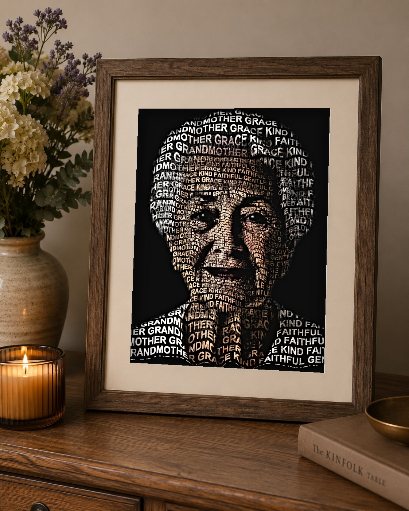
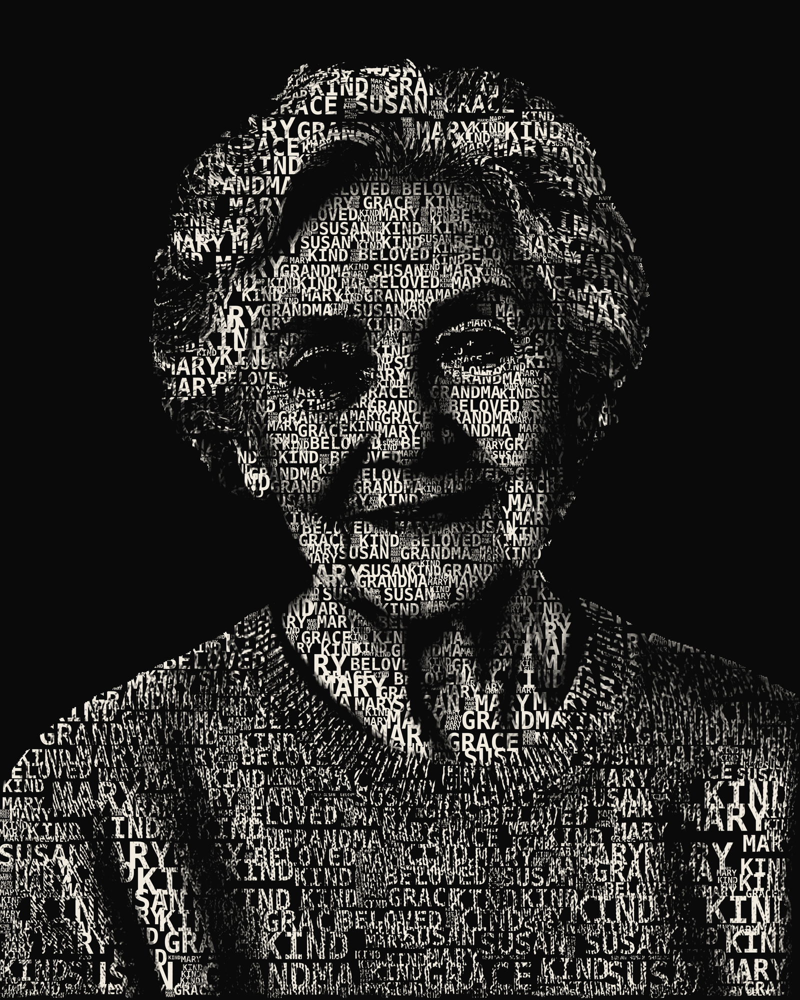
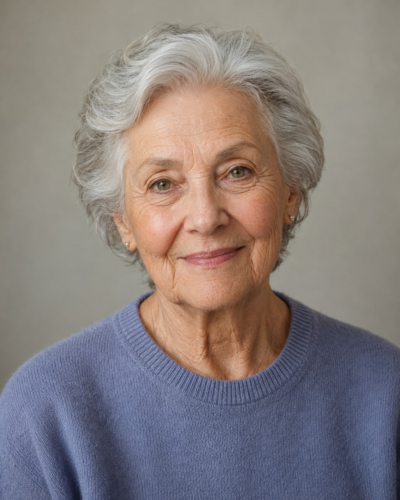
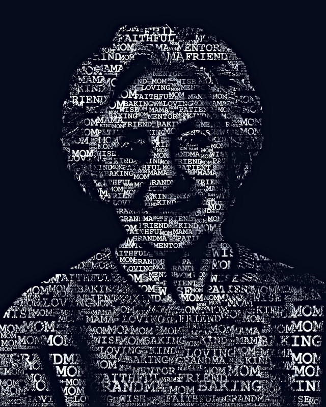
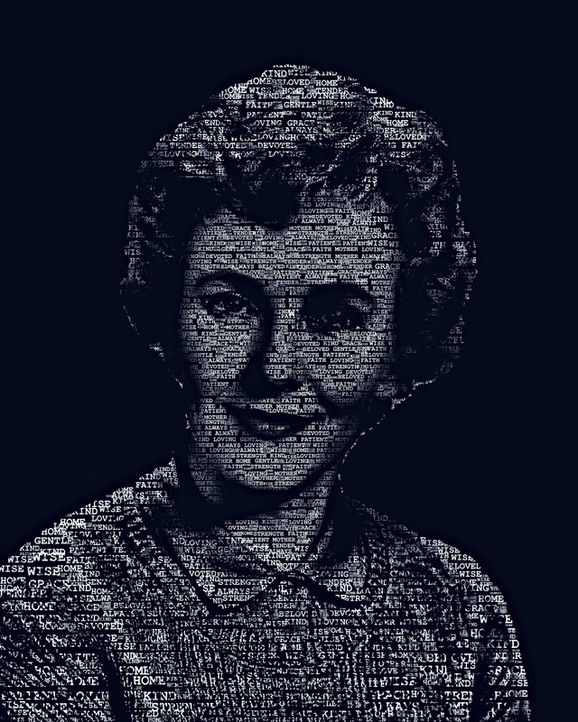

A photo of the person you've lost becomes a portrait composed of their name, their dates, and the words that captured who they were — printed, framed, and ready to hang or to give.
Create a remembrance keepsake Free to create and preview — you only order it if it feels right.
Drag to see the change — their photograph becomes a portrait of the words that describe them.


Each one is made entirely from the words a family chose — a name, the dates, the way they were loved.


Three quiet steps. No design skills, no rush.
A clear photo of your loved one — the one that feels like them.
Their name, the traits you remember, a date, a line from a tribute.
A framed or archival print for your home and the family — the high-resolution digital file comes free with it.
Free to create and preview — there's no cost until you decide to order. Your photo stays private, and nothing is shared.